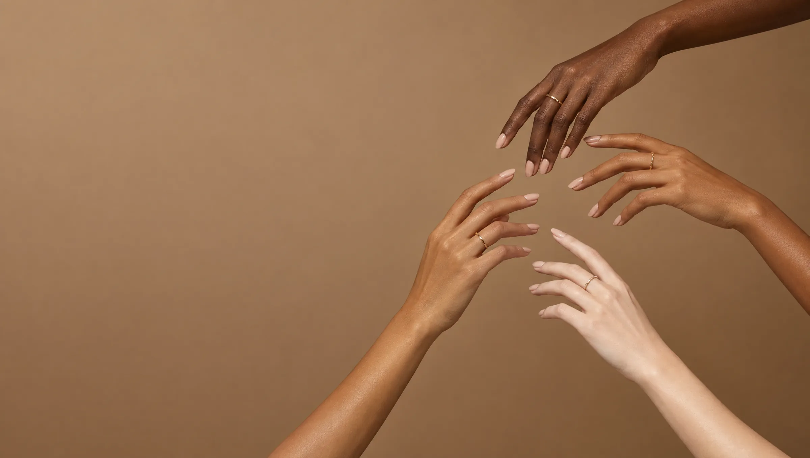

Automasaje para piernas pesadas: qué puedes hacer en casa
Llegas a la casa después de un día entero de pie, haciendo fila para el Metro o subiendo lomas en Medellín, y sientes que las piernas te pesan el doble que en la mañana. Antes de pensar en algo complicado, hay un automasaje de pocos minutos que puedes hacerte tú misma, sin cremas especiales ni aparatos.

Este automasaje para piernas pesadas no sustituye una valoración vascular, pero parte de una base real: ayuda a mover el líquido que se acumula en los tejidos cuando las venas y los vasos linfáticos de la pierna trabajan más despacio de lo normal, algo que en Colombia se nota más con el calor casi constante y las jornadas largas de pie. No es lo mismo que el drenaje linfático manual (DLM) que aplica un fisioterapeuta certificado: lo que sigue es una versión simple, pensada para piernas pesadas sin enfermedad linfática diagnosticada, no una técnica clínica completa.
Automasaje casero y drenaje linfático manual: no son lo mismo
El DLM es una técnica especializada, con protocolos como Vodder, Földi o Casley-Smith, que aplica un fisioterapeuta formado específicamente en linfedema, casi siempre dentro de un plan de tratamiento más amplio que incluye compresión y ejercicio. El automasaje que puedes hacer en casa es otra cosa: una versión simplificada, de autocuidado, que trabaja primero la zona más cercana al tronco (la ingle) para abrirle paso al líquido, y después la pierna de abajo hacia arriba.
Lo ideal es que alguien con formación te enseñe la técnica una vez antes de que la repitas sola a diario. Pero si nunca has tenido hinchazón persistente ni un diagnóstico de linfedema, la secuencia básica que viene a continuación es razonable para probar en casa.
Por qué en Medellín esto pesa tanto
El calor casi constante del Valle de Aburrá, sumado a los viajes frecuentes a tierra caliente, hace que las venas se dilaten un poco más de lo normal y el retorno de la sangre hacia el corazón sea más lento, así que la sensación de piernas pesadas suele aumentar en las tardes calurosas. Si a eso le sumas trabajos de pie en salud o comercio, muchas horas sentada en oficina o en el Metro, y subir lomas todos los días, el resultado se repite: piernas que laten y se hinchan al llegar la noche.
Nada de esto es exclusivo de un solo país, pero aquí se junta con mucha frecuencia.
Cómo hacer el automasaje para piernas pesadas, paso a paso
La lógica, que coincide con las guías de autodrenaje linfático simple que usan los servicios de linfedema, es trabajar primero cerca del tronco y después la pierna, con presión suave, nunca profunda, y siempre en dirección ascendente, hacia la ingle.
- Siéntate o acuéstate con la pierna apoyada y relajada. Respira hondo unas 5 veces, con las manos sobre el abdomen, antes de empezar.
- Con la mano plana, haz un movimiento suave de bombeo sobre la ingle, como empujando el líquido hacia arriba, unas 10 veces.
- Desliza ambas manos desde el tobillo hacia la rodilla, sobre piel seca y sin crema, con presión ligera. Repite 10 a 15 veces.
- Sube el mismo movimiento desde la rodilla hasta el muslo, siempre hacia la ingle, otras 10 a 15 veces.
- Cierra con el mismo bombeo suave en la ingle con el que empezaste.
Si en algún momento te duele o la piel queda roja, estás presionando más de lo necesario: afloja la mano. Diez a quince minutos al día, con la piel limpia y seca, suelen ser suficientes para notar si a ti te ayuda.
Qué puede ayudar realmente (y qué no esperar)
El masaje suave de este tipo puede favorecer el retorno venoso y aliviar la sensación de piernas cansadas o hinchadas, sobre todo si ya tienes varices, según coinciden varias fuentes de salud consultadas. Funciona mejor como complemento: caminar unos 30 minutos al día, evitar la ropa muy ajustada y usar medias de compresión cuando el médico las recomienda potencian lo que el automasaje por sí solo no alcanza a hacer.
En Seravena preferimos que el automasaje sea un complemento, nunca la única medida: por sí solo no resuelve una insuficiencia venosa ni un lipedema, pero sí puede ayudarte a sentir las piernas menos pesadas entre una valoración y otra.
Combinado con otros hábitos simples, como los que repasamos en Ejercicios sencillos para activar la circulación de las piernas en casa o en 7 hábitos para mejorar la circulación de piernas, el automasaje rinde más. Y si pasas muchas horas sentada o de pie sin moverte, vale la pena leer Sedentarismo y venas: qué le pasa a tus piernas, porque ahí suele estar buena parte de la causa de fondo.
Cuándo no debes hacerte este automasaje
Hay situaciones en las que el automasaje para piernas pesadas no es buena idea, y conviene conocerlas antes de empezar: sospecha de trombosis venosa (dolor o hinchazón que aparece de golpe en una sola pierna, con enrojecimiento y calor), infección de piel activa como la celulitis, varices con flebitis, o una insuficiencia cardíaca que no esté controlada. En cualquiera de estos casos, masajear puede empeorar las cosas en vez de ayudar, y lo primero es una valoración médica, no el automasaje.
Si nada de esto aplica y quieres saber si detrás de la pesadez hay algo más, como varices o insuficiencia venosa, una valoración de salud vascular en Medellín te lo aclara con un eco doppler.
Para empezar, no necesitas cambiar nada más hoy: esta noche, después de ducharte, dedica 10 minutos a probar la secuencia completa una sola vez, en piel seca, y fíjate si al despertar sientes la pierna más liviana que otros días. Si en cambio aparece dolor, la piel se pone roja o la hinchazón es claramente mayor en una sola pierna, no sigas con el automasaje: escríbenos para agendar una valoración antes de seguir.
Preguntas frecuentes
¿El automasaje para piernas pesadas realmente funciona?
En muchos casos puede ayudarte a sentir las piernas menos pesadas y a favorecer el retorno venoso, sobre todo si lo combinas con caminar y evitar estar muchas horas quieta, pero no cura varices, insuficiencia venosa ni lipedema: es una medida de autocuidado, no un tratamiento.
¿Cuál es la diferencia entre el automasaje casero y el drenaje linfático manual (DLM)?
El DLM es una técnica especializada que aplica un fisioterapeuta o terapeuta de linfedema certificado, con protocolos específicos según el caso. El automasaje casero es una versión simple que tú misma haces en casa, pensada para piernas pesadas sin enfermedad linfática diagnosticada, y nunca sustituye la terapia profesional cuando esta es necesaria.
¿Cuándo no debo hacerme este automasaje?
No lo hagas si sospechas una trombosis venosa (hinchazón o dolor repentino en una sola pierna, con enrojecimiento y calor), si tienes una infección de piel activa como celulitis, si tienes varices con flebitis, o si tu insuficiencia cardíaca no está controlada. En cualquiera de estos casos, consulta antes con un médico.
¿Cuánto tiempo al día debo dedicarle?
Diez a quince minutos al día suelen ser suficientes, de preferencia con la piel limpia y seca, sin crema ni aceite, y con presión suave que nunca debe doler ni dejar la piel roja.